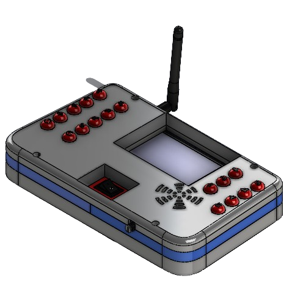

Guías educativas
Encuentra guías detalladas para aprender los conceptos fundamentales de programación y robótica de manera interactiva y divertida.
Bienvenidos a la Plataforma Educativa Esta plataforma está diseñada para fomentar el pensamiento lógico, computacional y secuencial en niños de cuarto a sexto de primaria mediante el uso de un robot móvil y programación en bloques. Aquí encontrarás una variedad de recursos educativos, videos guiados y manuales de usuario para apoyar el aprendizaje interactivo y práctico.
La programación por bloques es una metodología educativa que facilita el aprendizaje de conceptos de programación mediante el uso de bloques visuales que representan comandos y estructuras de control. Esta técnica es ideal para los estudiantes más jóvenes, ya que elimina la necesidad de escribir código complejo y reduce los errores sintácticos. Los estudiantes pueden arrastrar y soltar bloques para crear programas, lo que les permite concentrarse en la lógica y el flujo del programa. Nuestra plataforma incluye una interfaz de programación por bloques intuitiva y fácil de usar que se integra perfectamente con el robot móvil.
El robot móvil es una herramienta educativa diseñada para ejecutar los programas creados en la plataforma de programación por bloques. Equipado con sensores ultrasónicos, motores y ruedas omnidireccionales, el robot puede realizar una variedad de movimientos y tareas. Los sensores ultrasónicos permiten al robot detectar obstáculos y medir distancias, lo que es crucial para la navegación y la ejecución de tareas programadas. Las ruedas omnidireccionales le permiten moverse en cualquier dirección, facilitando maniobras complejas en espacios reducidos. El robot puede ser programado para seguir rutas específicas, evitar obstáculos y realizar acciones como girar y detenerse en puntos designados.
 El mando de control del robot móvil es un dispositivo esencial que permite la comunicación entre el usuario y el robot. Utiliza tecnología de comunicación inalámbrica ESP-NOW para enviar comandos secuenciales programados desde la plataforma de programación al robot. El mando de control está equipado con una pantalla LCD y varios botones, lo que permite a los usuarios interactuar con el robot de manera intuitiva. Los comandos pueden ser enviados en tiempo real o preprogramados para ser ejecutados secuencialmente, proporcionando flexibilidad en la ejecución de las tareas.
La plataforma de programación por bloques es el núcleo de nuestro sistema educativo. Desarrollada utilizando HTML, CSS y JavaScript, esta plataforma permite a los estudiantes crear programas visualmente. Los bloques de programación incluyen comandos básicos y estructuras de control como bucles y condiciones, lo que permite a los estudiantes desarrollar programas complejos de manera sencilla. Una vez que los programas están completos, pueden ser transferidos al mando de control y posteriormente ejecutados por el robot móvil. La plataforma también incluye guías educativas y ejercicios interactivos que ayudan a los estudiantes a aprender y practicar los conceptos de programación y robótica de manera progresiva.
Encuentra guías detalladas para aprender los conceptos fundamentales de programación y robótica de manera interactiva y divertida.
Accede a videos tutoriales que te guiarán paso a paso en el uso de la plataforma y el robot móvil.
Consulta manuales detallados para aprovechar al máximo las funcionalidades del robot móvil y la plataforma educativa.

Explora nuestros recursos educativos para mejorar tu comprensión de la programación y robótica.
Mira nuestros videos referenciales para aprender de manera visual e interactiva.
Consulta nuestros manuales para obtener una guía completa sobre el uso de la plataforma y el robot móvil.